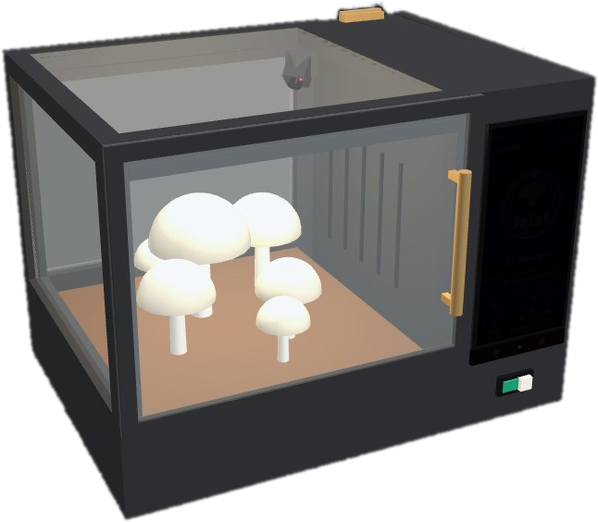
Pilz
GrowBox.
Eine Growbox, die aussieht wie ein Küchengerät, sich selbst um Licht, Feuchte und Wasser kümmert und an der jeder mit einem Blick sieht, ob alles gut ist.
Mensch-Maschine-Interaktion · Prof. Zagel
Hochschule Coburg · WS 2026/27
Felix Schnapp · Ardit Becolli · Felix Zimmermann
Was in diesem
Booklet steckt.
Erst für wen und was die Box können muss, dann wie sie entstanden ist und welche Technik drinsteckt, zuletzt wie man sie bedient. Jede Entscheidung steht mit dem Grund aus der Vorlesung und dem Nachteil, den wir dafür in Kauf nehmen.
- 03Für jeden gemacht.Zielgruppe · Anforderungen · Nutzungskontext
- 04Vom Aquarium zur Mikrowelle.Konzeptweg Box V1 → V3 · Abwägung
- 05Wie eine Mikrowelle. Nur ohne Knopfsalat.Die Box V3 annotiert
- 06Ein Taster. Eine Bedeutung.Bedienteile an der Box · Abwägung
- 07Vom Papier ins CAD.Konstruktion · zwei Module
- 08Vom Rohdruck zum Prototyp.Prototyp · FabLab
- 09Jedes Detail hat einen Zweck.3D-Modell · alle Features
- 10Klein für die Küche. Groß für mehr Ernte.Zwei Größen
- 11Ein Zustand. Zwei Ansichten.Pi, Display, App · echt und simuliert
- 12Drei Ideen. Eine gewählt.Leitideen A · B · C als Skizzen
- 13Vom Entwurf zum Bedienfeld.Skizze → v1 → v7 · Abwägung
- 14Warum Blau statt Schwarz?Farbe · Abwägung
- 15Ein Blick. Eine Aussage.Das Startbild lesen
- 16Eine Warnung. Ein Knopf.Fall 1 Tank leer · Fall 2 Ernte · Fall 3 Handy
- 17Die Hürde passt zum Risiko.Neu ansetzen ohne Fehler
- 18Bewusst weggelassen.Abwägungen und Grenzen
Vom Aquarium
zur Mikrowelle.
Wir haben uns bewusst eine Form ausgesucht, die jeder schon kennt. Am Anfang stand V1, ein Aquarium mit Bedienteil, daraus wurde die Mikrowelle: links das Fenster, rechts das Bedienfeld.
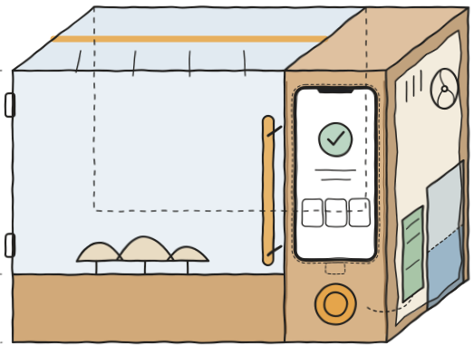
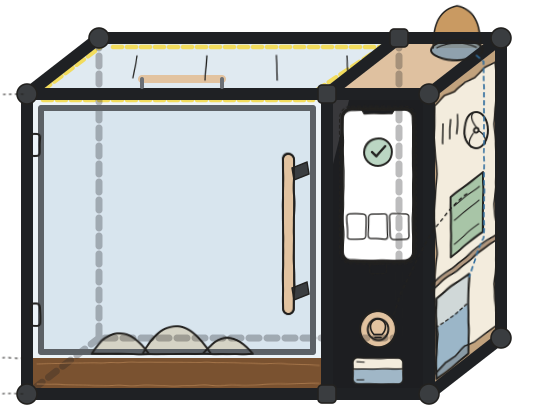
| Entscheidung | Grund | Nachteil |
|---|---|---|
| V1 → V2: ein Gerät statt zwei | Das Display hat einen festen Platz, kein Kabel liegt dazwischen. Die Form einer Mikrowelle kennt jeder (mentales Modell). | Der Technikraum kostet Breite. |
| iPhone statt 5″-Touchdisplay | Scharfes Display, die Web-Oberfläche lässt sich am Laptop testen und direkt zeigen (Prototyping). | Das iPhone ist nur Platzhalter für ein festes Display. |
| V2 → V3: größer, Tank mit SichtfensterIm Prototyp sitzt der Tank noch oben (siehe „Alle Features“). | Wasser unten, Elektronik oben, dazwischen eine Trennwand: Läuft einmal Wasser aus, erreicht es die Elektronik nicht. Was schiefgehen kann, geht irgendwann schief (Murphy's Law). | Mehr Stellfläche in der Küche. |
| LED im Rahmen hinter Blende statt im Deckel | Das Licht fällt nur auf die Pilze, wer davorsteht, wird nicht geblendet. Der Deckel bleibt kabelfrei und abnehmbar. | Ein LED-Kanal in vier Profilen. |
Wie eine Mikrowelle.
Nur ohne Knopfsalat.
V3 hat zwei Räume: links wachsen die Pilze, rechts steckt alles, was sie versorgt. Vorn bleibt nur das Bedienfeld.
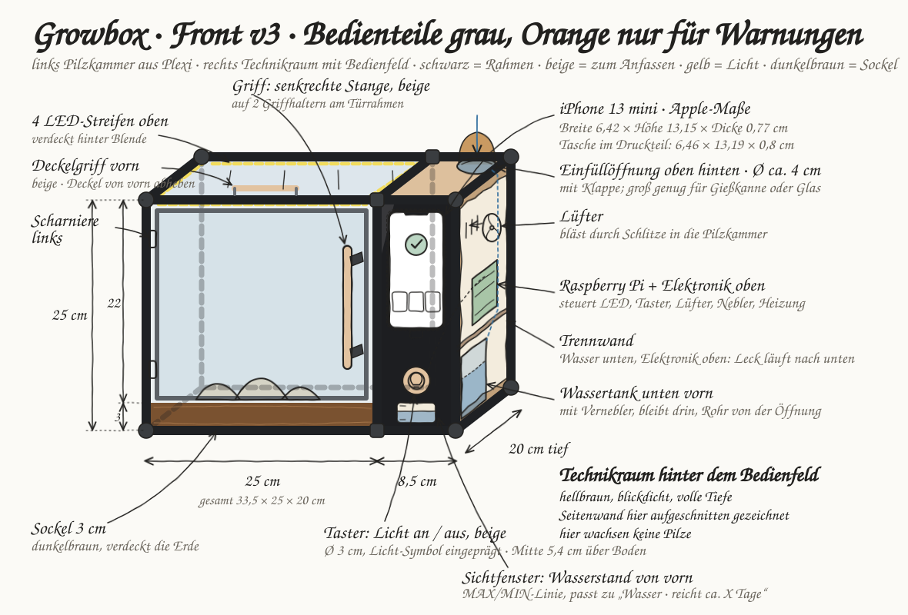
1 2 3 4 5 6- 1PilzkammerPlexiglas, Tür links angeschlagen. Man sieht die Pilze, ohne zu öffnen.
- 2TechnikraumRaspberry Pi, Lüfter, Nebler und Heizung, durch eine Trennwand vom Wasser getrennt.
- 3TankUnten im Technikraum, eingefüllt wird oben hinten durch eine Öffnung.
- 4LED im RahmenIm oberen Rahmen statt im Deckel: Der Deckel bleibt kabelfrei und abnehmbar.
- 5BedienfeldDisplay und Taster, mehr gibt es vorn nicht (siehe „Ein Taster. Eine Bedeutung.“).
- 6Kamera, fest eingebautHinten rechts in der Kammer. Nichts zu verstellen, immer derselbe Blick: Die Bilder in der App bleiben vergleichbar.
Ein Taster.
Eine Bedeutung.
Außer dem Display gibt es drei haptische Elemente: Taster, Türgriff und Deckelgriff.
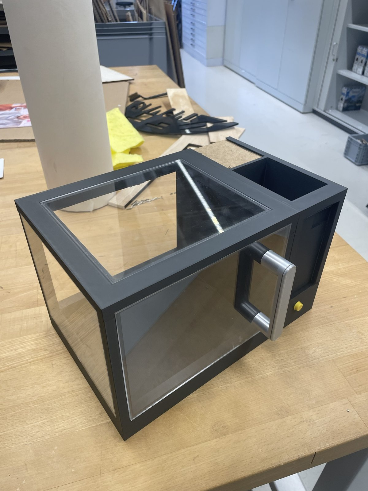
| Entscheidung | Grund | Nachteil |
|---|---|---|
| Taster schaltet nur das Licht | Ein großer Taster ist auch mit zitternder Hand schnell getroffen (Speed-Accuracy-Tradeoff). Seine Form zeigt, dass man ihn drücken kann (Affordance). | Alles andere bedient man über das Display. |
| Taster weckt nicht das Display | Ein Druck bewirkt immer dasselbe. Mit zwei Wirkungen wüsste man nie, ob man gerade das Licht oder das Display schaltet (Modusfehler). | Das Display braucht einen eigenen Weg zum Aufwecken. |
| Griffe grau statt schwarz | Die Griffe heben sich von der schwarzen Box ab und sind auf einen Blick zu finden. | Der beige Taster ähnelt dem orangen Warnpunkt auf dem Display, nur die Position unterscheidet beide. |
| Kein Warnlicht an der Box | Warnungen erscheinen nur als oranger Punkt auf dem Display, nicht zusätzlich an einer zweiten Stelle. | Fällt das Display aus, gibt es keine Warnung. |
| Tank vorn mit Sichtfenster | Die Linie im Sichtfenster zeigt denselben Füllstand wie der Balken „Wassertank“ auf dem Display (Mapping). | Der Technikraum braucht eine Trennwand. |
Im Bau wurde aus dem Taster ein Schiebeschalter fürs Licht, eine Sensorleiste weckt das Display, und der Tank sitzt oben (siehe „Alle Features“). Die Regel blieb: ein Bedienteil, eine Bedeutung.
Ein Zustand.
Zwei Ansichten.
Damit Box und App nie Unterschiedliches zeigen, gibt es den Zustand nur an einer Stelle: im Raspberry Pi. Das Display an der Box und die App lesen ihn nur und schicken Befehle zurück.
| Baustein | Technik | Stand im Prototyp |
|---|---|---|
| Steuerrechner | Raspberry Pi, Python + FastAPI, HTTP und WebSocket für Live-Updates | entworfen, ruht: das Interface ging vor |
| Bedienfeld | Web-Oberfläche ohne Framework (HTML, CSS, JavaScript), im Safari-Vollbild, gesperrt per Geführtem Zugriff | läuft (v7), am Laptop ohne Hardware testbar |
| Taster und LED | gpiozero am Pi; LED-Streifen adressierbar, 5 V | echt; Ansteuerung der Streifen folgt |
| Messwerte | Temperatur, Feuchte und Tank, im Admin-Modus umschaltbar | simuliert, für die Vorführung |
| App | eigene App, liest denselben Zustand | Live-Sync am Mac gezeigt, mit dem Pi geplant |
| Gehäuse | CAD, 3D-Druck in PLA, Plexiglas 3 mm | gebaut (siehe CAD und Prototyp) |
Warum ein Zustand?
Model View Controller: ein Modell, mehrere Ansichten (99–100). Markiert der Power-User unterwegs eine Meldung als gesehen, zeigt die Box das sofort. Gleiche Wörter und Farben in beiden (Konsistenz 80–81).
Warum simuliert?
Im Prozess entstehen bewusst nur Prototypen, ihr Code ist nicht zum Weiterverwenden gedacht (Implementierung 109). Der Prototyp prüft Bedienung und Aussehen, nicht die Implementierung (Houde & Hill 122).
Drei Ideen.
Eine gewählt.
Bevor es einen Bildschirm gab, haben wir drei Richtungen skizziert. Gewählt haben wir die einfachste, weil Ingrid dabei am wenigsten lernen muss. Aus den beiden anderen ist je ein Teil geblieben.
| Entscheidung | Grund | Nachteil · was blieb |
|---|---|---|
| A verworfen: Pilz-Begleiter | Stimmungen einer Figur muss man deuten, Punkte und Level lenken vom Zustand der Box ab. | Geblieben: Der Pilz wächst im Ring bis zur Ernte (Progression). |
| B verworfen: physisch zuerst | Was ein Drehknopf gerade schaltet und welche LED was bedeutet, muss man sich merken. | Geblieben: ein echter Taster fürs Licht. |
| C gewählt: radikal einfach | Form, Farbe und ein Wort erfasst man mit einem Blick, ohne zu lesen oder zu lernen (Model Human Processor). | Wenig Persönlichkeit, die Box wirkt nüchtern. |
Vom Entwurf
zum Bedienfeld.
Aus der Skizze wurde in sieben Ständen das Bedienfeld von heute. Jeden Stand haben wir an den Folien geprüft, meist wurde dabei etwas weggenommen.
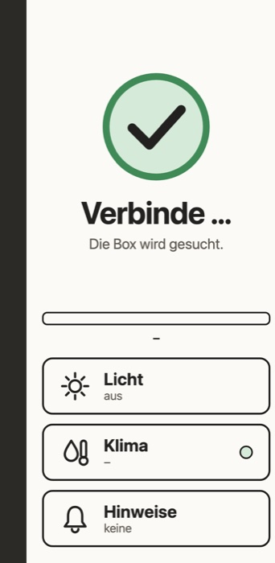
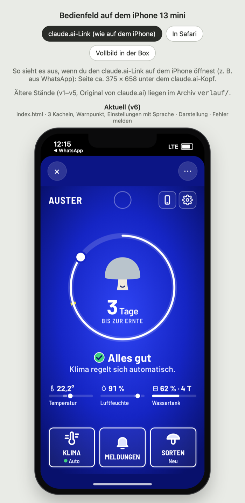
| Entscheidung | Grund | Nachteil |
|---|---|---|
| v1 → v2Blau als Fläche statt Creme | Grün, Orange und Weiß springen auf dem ruhigen Blau sofort heraus (Präattentiv). | Wer Schwarz lieber mag, muss es einstellen. |
| v2 → v3Ring zeigt Tage bis zur Ernte | Ein klares Ziel mit sichtbarem Fortschritt, der Pilz darin wächst mit (Progression). | Die Feuchte rückt in eine kleine Zeile darunter. |
| v4 → v5Drei Kacheln statt fünf | Wenige große Ziele statt Knopfsalat, Seltenes liegt in der App (Minimalist Design). | Wer selbst eingreifen will, braucht die App. |
| v5 → v6Ziele ≥ 44 pt, Warntext 6,4 : 1 | Lesbar aus zwei bis drei Metern und mit Lesebrille (Kontrast). | Weniger Inhalt pro Bildschirm. |
| v6 → v7Rahmen heißt drückbar | Was einen Rahmen hat, kann man drücken, Informationen stehen zwischen Linien (Affordance). | Infozeilen wirken schlichter. |
Warum Blau
statt Schwarz?
Das wurde in der Präsentation gefragt. Die Antwort: Schwarz hat schon eine Bedeutung. Schwarz heißt Standby, Blau heißt die Box läuft.
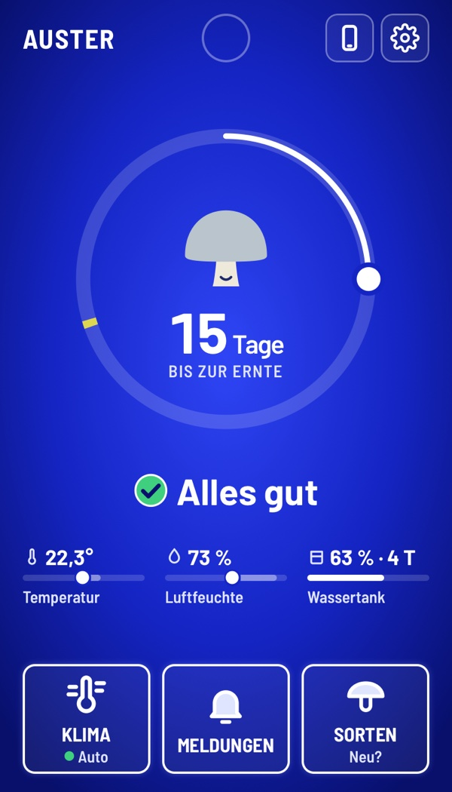
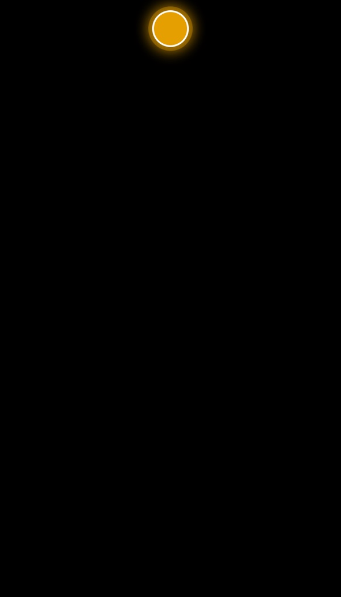
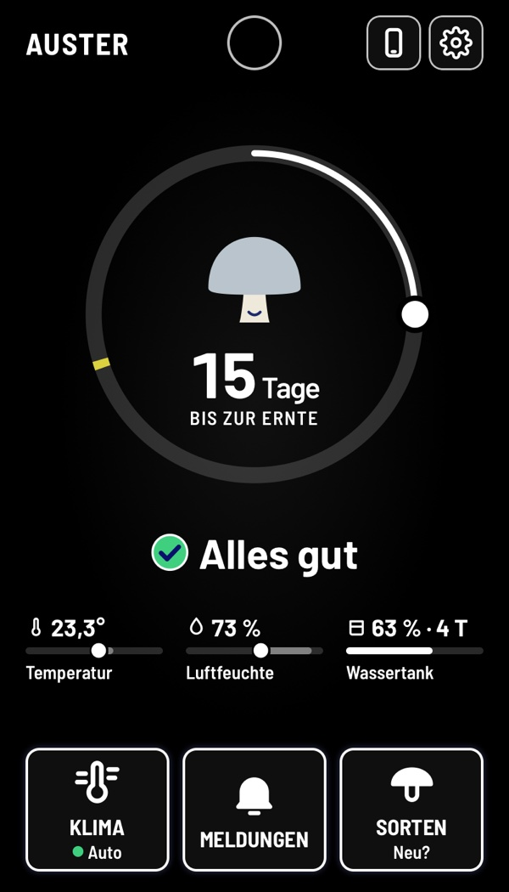
| Entscheidung | Grund (Folie) | Nachteil, den wir in Kauf nehmen |
|---|---|---|
| Blau im Betrieb | Schwarz ist für Standby reserviert. Blau als Fläche, nicht als Schrift (Blau-Zapfen 20, 22). | Wer Schwarz lieber mag, muss es einstellen (Hoher Kontrast, 66). |
| Nur der Warnpunkt blinkt, nur im Standby | Bewegung fällt sofort auf, ohne Suchen (präattentiv 26–27). | Eine Warnung im laufenden Betrieb blinkt nicht. |
| Bewusst minimalistisch | Keine Uhr, drei Kacheln statt sechs, Seltenes hinter dem Zahnrad (Nielsen: minimalist design 130). | Urlaub, Sprache und Hilfe liegen einen Tipp tiefer. |
Ein Blick.
Eine Aussage.
Aus der Ferne sieht Ingrid, ob etwas zu tun ist. Aus der Nähe sieht sie, was. Jede Information steht genau einmal da.
- 1WarnpunktLeuchtet orange bei einer Warnung. Im Standby blinkt nur er. präattentiv · 26–27
- 2Ring = FortschrittTage bis zur Ernte. Der Pilz wächst in drei Stufen. Progression · Flow (Gamification)
- 3StatusImmer Form + Farbe + Text, nie Farbe allein. Farbsehschwäche · 23
- 4Drei WerteImmer Zahl, Balken und Name. Der Tank als Füllstand. Konsistenz · 80
- 5Drei KachelnGroße Ziele. Ein Rahmen heißt: drückbar. Fitts 50 · Affordance 72–73
grüner Kreis mit Haken
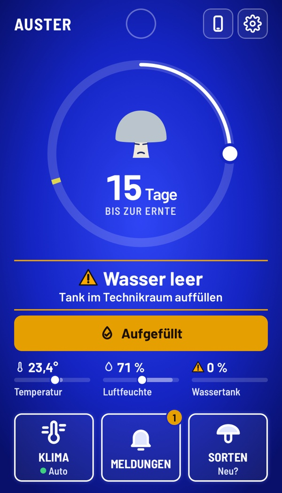
gelbes Dreieck, Text und ein Knopf
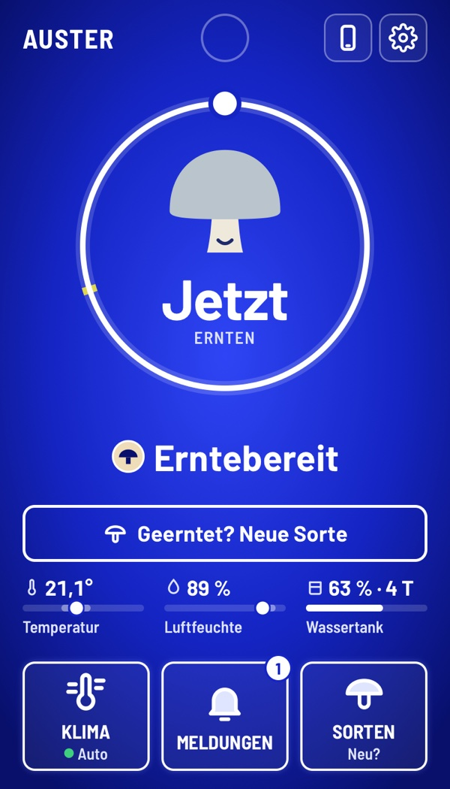
beiger Kreis mit Pilz
Eine Warnung.
Ein Knopf.
Ingrid muss nichts einstellen. Sie handelt nur, wenn die Box sie braucht, und bekommt auf jede Handlung sofort eine Rückmeldung.
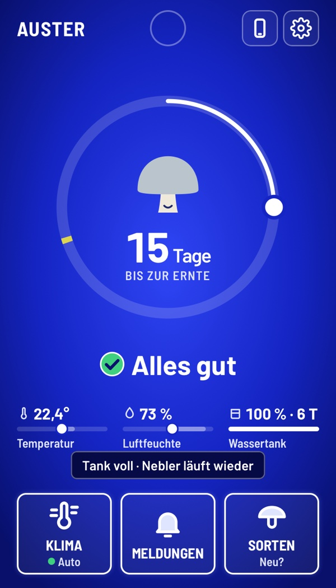
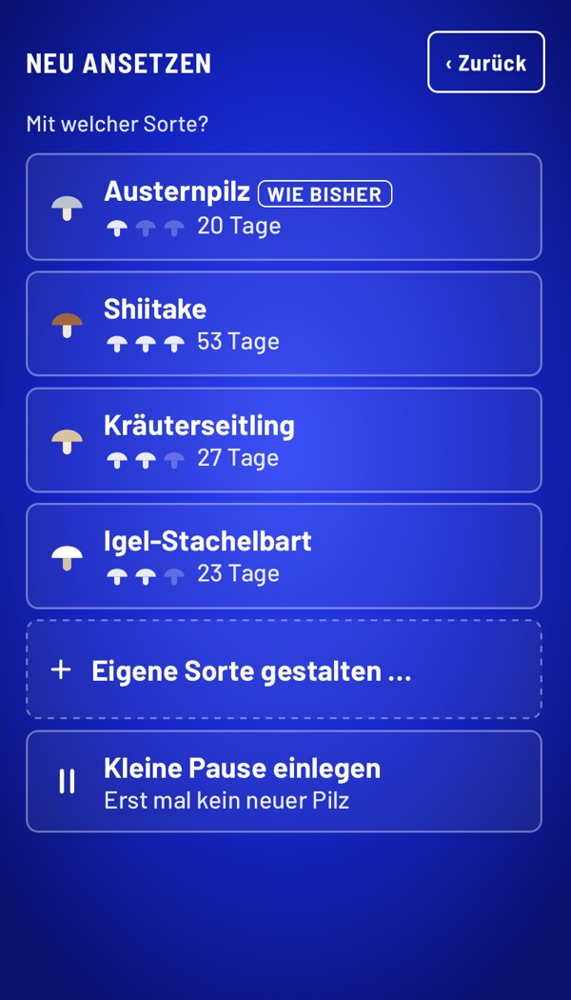
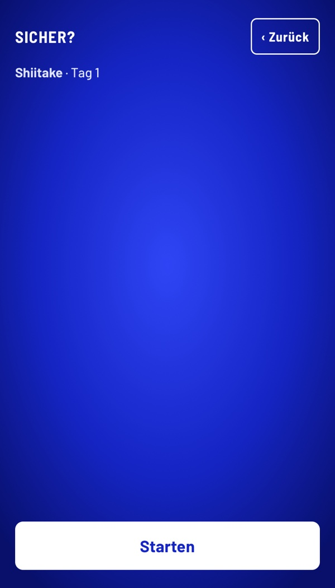
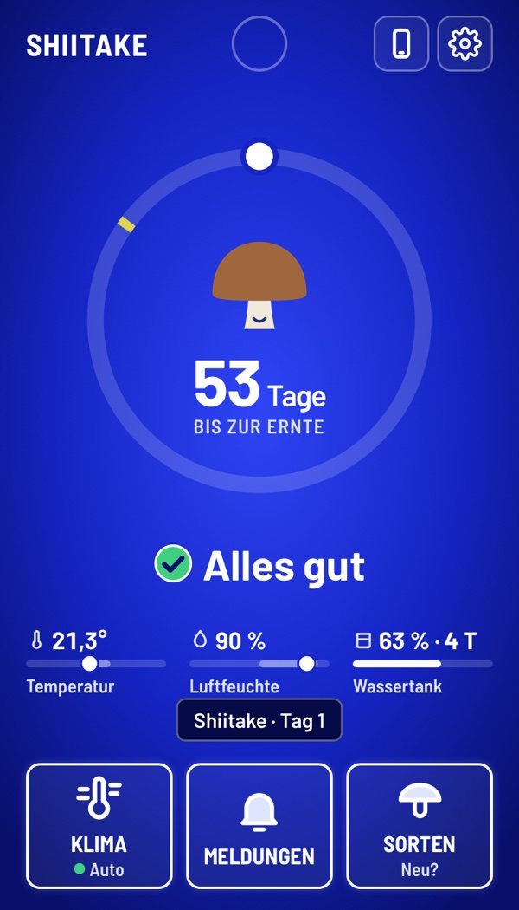
Die Hürde passt
zum Risiko.
Wer mitten im Wachstum neu ansetzt, verliert seine Pilze. Wer nach der Ernte neu ansetzt, verliert nichts. Deshalb fragt die Box unterschiedlich streng.
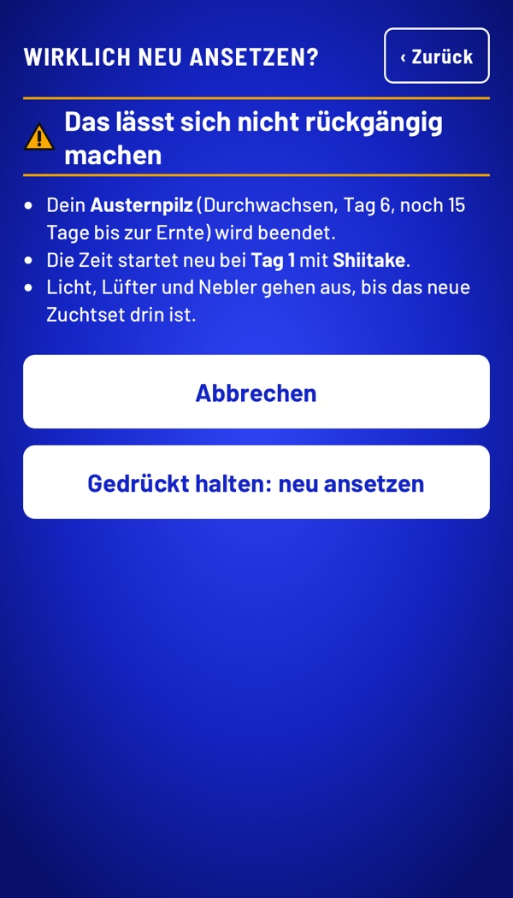
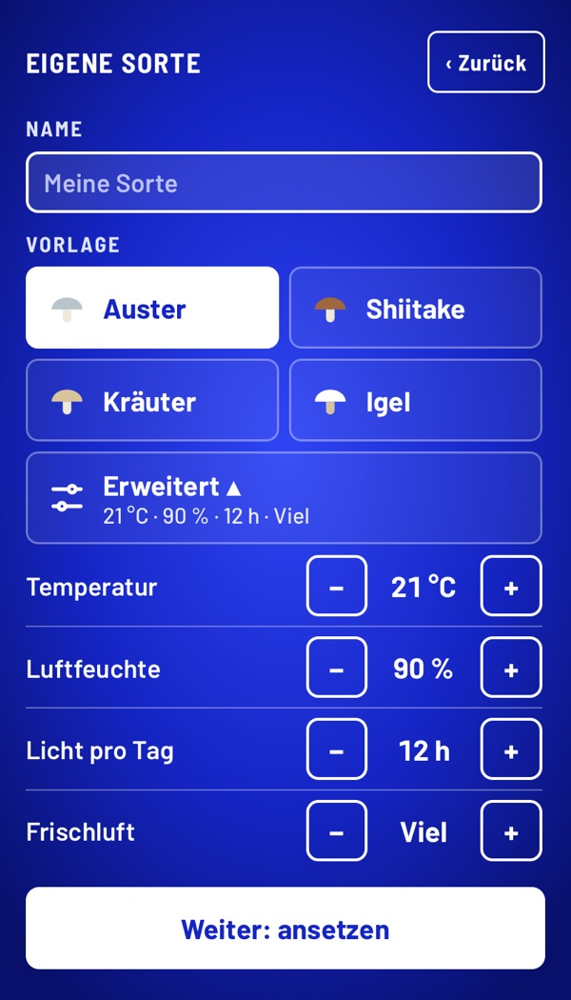
Hürde nach Risiko
Mitten im Wachstum
Nach der Ernte
Murphy · 61 · Nielsen: Fehler vermeiden · 130
Erst Übersicht, dann Detail
Eigene Sorte an der Box nur nach der Ernte. Werte eingeklappt, feste Schritte mit Grenzen. Wer mehr will, zoomt in der App hinein.
Zoomable UI · 101–102
72–73 Affordance · 80 Konsistenz
Bewusst weggelassen.
Und was noch offen ist.
Ein einfaches Bedienfeld entsteht vor allem durch das, was fehlt. Jede Lücke ist eine Entscheidung, und jede hat einen Preis.
| Weggelassen | Grund (Folie) | Nachteil, den wir in Kauf nehmen |
|---|---|---|
| Keine Uhr im Display | Für die Pilze unwichtig, jede Angabe mehr lenkt ab (minimalist design 130). | Wer die Zeit sucht, schaut woanders hin. |
| Kein Eingriff ins Klima an der Box | Jede Ausnahme ist ein Zustand, den man vergisst (Modusfehler 60, Murphy 61). | „1 Min lüften“ gibt es nur in der App. |
| Kein Ruhemodus, kein Handsensor | Das Display bleibt an, der Warnpunkt ist aus 3 m sichtbar (präattentiv 26–27). | Das Display braucht dauerhaft Strom. |
| Kein Warnlicht an der Box | Ein Kanal für Warnungen, der orange Punkt reicht (Konsistenz 80). | Fällt das Display aus, sieht Ingrid keine Warnung. |
| Verläufe nur in der App | Erst Übersicht, dann Detail (Zoomable UI 101–102). | Die Box zeigt nur das Jetzt. |
Geprüft
- ✓Nielsen-Heuristiken: 9 von 10 erfüllt (130). Es fehlt „Help and documentation“.
- ✓Warntext-Kontrast 6,4 : 1, vorher 2,8 : 1 (66).
- ✓Farbsimulation Rot-Grün: Status nie nur über Farbe (23).
Grenzen
- –Die Personas sind Annahmen, nicht befragt.
- –Messwerte sind simuliert, echt sind Taster und LED.
- –Noch kein Test mit echten Nutzern.